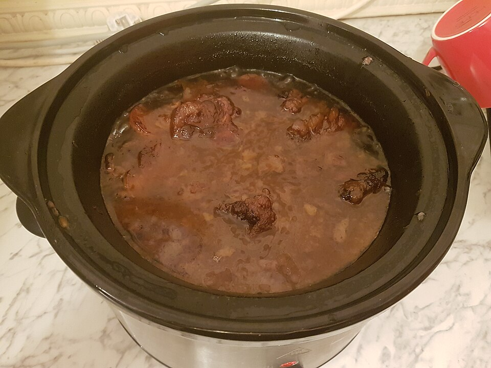

Carnes
Rabada

Ingredientes
- 1 rabada
- 1 maço de cheiro-verde
- Sal e pimenta-do-reino a gosto
- ½ copo de vinho branco
- 3 cebolas em rodelas
- 4 tomates ou 3 colheres (sopa) de purê de tomate
- Pimenta verde a gosto
Modo de preparo
- Corte a rabada pelos nós e cozinhe na véspera com um pouco de sal e cheiro-verde picado.
- Faça um bom refogado com a cebola, os tomates, pimenta-do-reino, cheiro-verde e pimenta verde a gosto.
- Junte a rabada ao refogado, acrescente uma ou duas conchas de água e deixe ferver bem. Despeje também o meio copo de vinho.
- Sirva bem quente, com o próprio molho que se formou. Combina com arroz e farofa.
Observação: a dica de servir com arroz e farofa foi acrescentada pelo costume clássico de rabada; não estava na receita manuscrita.